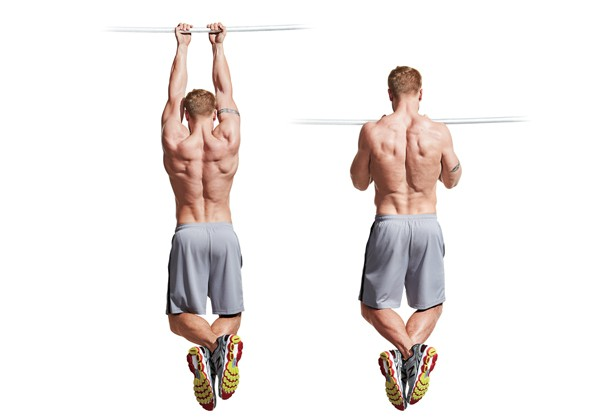

Pull-Up

1: Nắm chặt thanh xà
-
Nắm lấy thanh xà với lòng bàn tay hướng ra ngoài
(cách lắm tay rộng) hoặc hướng vào trong (cách nắm tay hẹp, thường gọi
là chin-up).
-
Hai tay của bạn nên rộng bằng vai hoặc hơi rộng hơn.
2: Thả lỏng người treo Lên xà
-
Duỗi thẳng tay hoàn toàn khi bạn treo người trên thanh xà. Chân của
bạn không chạm đất.
-
Giữ cơ bụng căng, chân duỗi thắng hoặc hơi cong, tránh đung đưa cơ
thể.
3: Kính hoạt cơ lưng và vai
-
Trước khi bắt đầu kéo, kích hoạt các cơ lưng bằng cách kéo xương bả
vai xuống và về phía sau.
4: Kéo người lên
-
Dùng cơ lưng và cơ tay để kéo người lên cho đến khi cằm của bạn chạm
hoặc vượt qua thanh xà.
- Giữ khuỷu tay sát người khi bạn kéo lên.
-
Tập trung vào việc sử dụng cơ lưng thay vì chỉ dùng tay.
5: Hạ người xuống
-
Từ từ hạ người xuống vị trí ban đầu một cách có kiểm soát.
-
Duỗi thẳng tay hoàn toàn khi bạn trở về vị trí ban đầu để hoàn thành
một lần kéo.
6: Lặp lại
-
Tiếp tục thực hiện số lần kéo mà bạn có thể duy trì với tư thế đúng.
7: Mẹo cải thiện pull-up
-
Bắt đầu với pull up hỗ trợ: Nếu bạn cảm thấy pull-up quá khó, có thể
sử dụng dây kháng lực, máy
tập hỗ trợ, hoặc nhờ ai đó giúp đỡ để tăng cường sức nạnh.
-
Pull-up âm (Negative pull-up): Bắt đầu từ vị trí trên cao (cằm ở trên
thanh xà) và từ từ hạ người
xuống để tăng cường cơ bắp.
-
Tập luyện thường xuyên: Như bất kỳ bài tập nào, tập luyện đều đặn sẽ
giúp bạn cải thiện. Bạn cũng
có thể kết hợp các bài tập khác để tăng cường sức mạnh cơ lưng và tay.
Chin-Up

1: Nắm chặt thanh xà
-
Dùng tay nắm thanh xà với lòng bàn tay hướng về phía bạn (underhand
grip).
-
Hai tay nên đặt cách nhau khoảng bằng vai hoặc hẹp hơn một chút.
2: Treo người thẳng
-
Duỗi thẳng tay hoàn toàn khi bạn treo người trên thanh xà, giữ cơ thể
ổn định và không đung đưa.
-
Giữ cơ bụng căng để duy trì sự ổn định cho cơ thể, chân có thể hơi co
hoặc duỗi thẳng.
3: Kéo người lên
-
Kích hoạt cơ bắp tay trước (biceps) và cơ lưng để kéo người lên.
-
Kéo người lên cho đến khi cằm của bạn vượt qua thanh xà.
-
Giữ khuỷu hướng về phía sau và gần cơ thể khi bạn kéo người lên.
4: Hạ người xuống
-
Từ từ hạ người xuống vị trí ban đầu với sự kiểm soát, không nên thả
người đột ngột.
-
Duỗi thẳng tay hoàn toàn để kết thúc một lần thực hiện.
5: Lặp lại
-
Lặp lại số lần bạn có thể thực hiện với tư thế đúng.
6: Lưu ý
-
Chin-up sự dụng lòng bàn tay hướng về phía bạn, tập trung nhiều hơn
vào cơ bắp tay phía trước
(biceps) và cơ lưng dưới.
-
Tập với trợ lực nếu bạn gặp khó khăn, hãy dùng dây kháng lực hoặc máy
tập hỗ trợ để giúp dễ
dàng thực hiện hơn.
-
Chin-up âm (Negative chin-up): Bắt đầu ở vị trí trên cao với cằm ở
trên thanh xà và từ từ hạ người
xuống để phát triển sức mạnh.
-
Kết hợp các bài tập bổ trợ: Tập thêm các bài tập như kéo xà bằng tạ
hoặc đu xà để tăng sức mạnh
cho cơ lưng và bắt tay.
Kipping pull-up

-
Kipping pull-up là một kỹ thuật kéo xà phổ biến trong CrossFit, giúp
tạo đà từ hông và chân để đễ dàng nâng cơ thể lên mà không sử dụng
hoàn toàn lực từ tay và lưng như khi tập pull-up truyền thống. Để tập
Kippingpull-up hiệu quả và an toàn, bạn cần làm quen với các bước cơ
bản sau:
1: Làm quen với động tác swings (đu)
-
Bám hai tay vào thanh xà, hai tay rộng hơn vai.
-
Bắt đầu chuyển động đu người từ trước ra sau, tận dụng sự chuyển động
của vai và hông để tạo đà.
-
Giữ cơ thể, đặc biệt là cơ bụng và cơ mông, giúp kiểm soát chuyển
động.
2: Tập động tác "kip" (hông và chân)
-
Khi người đu ra phía trước, siết chặt cơ bụng và cơ mông, dùng lực đẩy
hông ra sau và gối lên phía trước.
-
Tập chung vào việc tạo chuyển động từ hông và chân để tạo đà kéo cơ
thể lên, không dùng hoàn toàn lực tay.
3: Luyện tập "pop" và kéo lên
-
Khi đu người ra phía sau, đẩy mạnh hông và chân lên để tạo đà cho động
tác kéo xà.
-
kết hợp lực từ đà của chân và tay để kéo cơ thể lên đến khi cằm qua
xà.
-
Khi hạ người xuống, tiếp tục đu người để duy trì động tác và thực hiện
lần kéo lên tiếp theo.
4: Luyện tập đều đặn để nâng cao kỹ thuật
-
Bắt đầu từ những bài tập với số lần ít và thực hiện chậm để kiểm soát
động tác.
-
Chú trọng giữ nhịp đu người và kipping pull-up đều đặn, giúp tạo động
tác uyển chuyển và giảm nguy cơ chấn thương vai.
5: Lưu ý
-
Không nên lạm dụng kipping pull-up vì dễ gây căng cơ vai, nhất khi bạn
chưa có đủ sức mạnh cơ bản.
-
Luôn khởi động kỹ vai, hông và cơ bụng trước khi thực hiện.